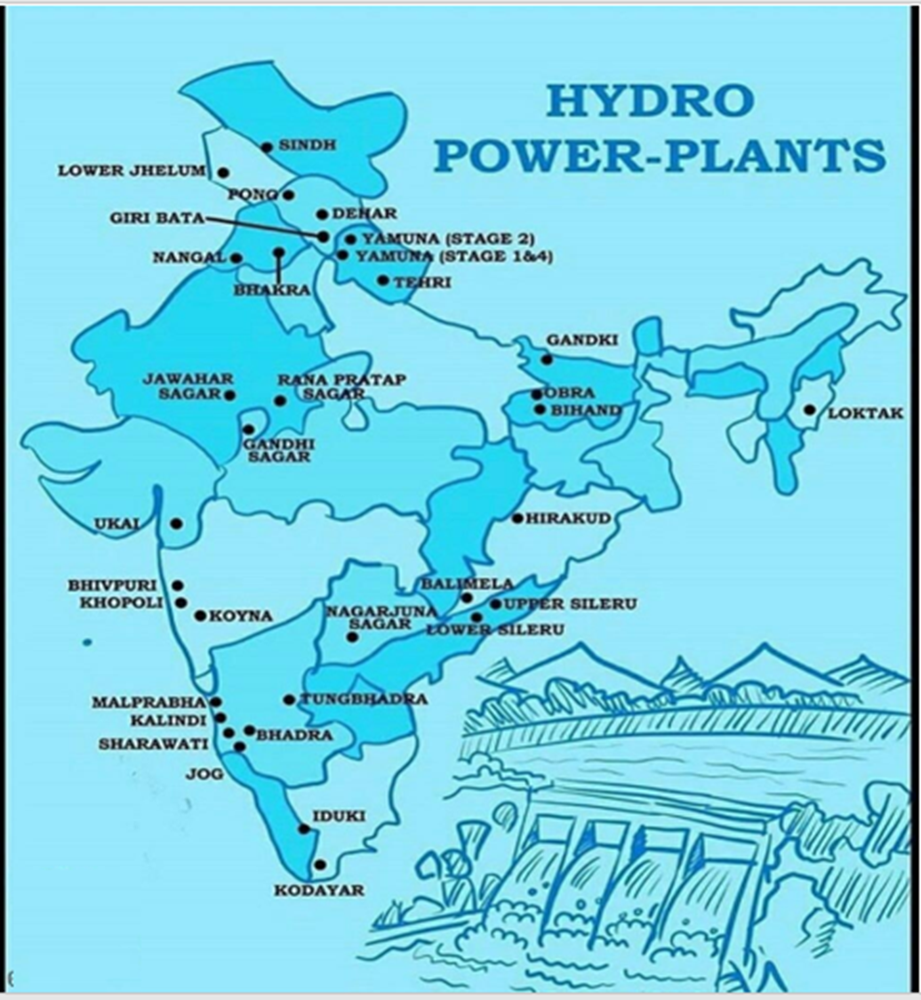

24 Energy Resources In India Thermal And Hydro Power Plants
Thermal Power Plant in India: Key Source of Electricity
Generation
- 1. Introduction
● Definition : A thermal power plant converts heat energy from burning fossil
fuels, primarily coal, into electrical energy. The process involves heating water to create steam, which spins a turbine connected to a generator, producing electricity.
● Significance : Thermal power plants are vital for India’s energy production,
especially due to the country's abundance of coal reserves. These plants are often located near coal or oil fields to optimize fuel transport.
- 2. Working of a Thermal Power Plant
1. Fuel Combustion : Fossil fuels like coal, gas, or oil are burned to release heat
energy.
2. Steam Generation : The heat converts water into high-pressure steam in the
boiler.
3. Steam Expansion : Steam is directed onto turbine blades, causing rotation.
4. Electricity Generation : The rotating turbine drives a generator, converting
mechanical energy into electrical energy.
5. Condensation and Reuse : Steam is cooled and condensed back into water,
which is reused in the cycle.
- 3. Types of Thermal Power Plants in India
● Coal-Fired Thermal Power Plants : Uses coal as the primary fuel. They
contribute approximately 75% of India's electricity, with notable plants in Korba
(Chhattisgarh) , Singrauli (Uttar Pradesh) , and Kahalgaon (Bihar) .
● Gas-Fired Thermal Power Plants : Operates on natural gas. Major plants are
located in Maharashtra, Gujarat, and Andhra Pradesh.
● Geothermal Thermal Power Plants : Use underground fluids to generate energy.
India’s first geothermal plant is being developed in Ladakh .
● Biomass Thermal Power Plants : Utilizes agricultural residues like rice husk,
straw, and coconut shells.
● Nuclear Thermal Power Plants : Uses nuclear fission to generate energy. The
Apsara Research Reactor in Mumbai was Asia’s first nuclear reactor.
- 4. Major Thermal Power Plants in India
● Vindhyachal Thermal Power Station (Madhya Pradesh) : Largest coal-fired
thermal plant with a capacity of 4,760 MW.
● Mundra Thermal Power Station (Gujarat) : India’s second-largest thermal plant
with a capacity of 4,620 MW.
● Sasan Ultra Mega Power Plant (Madhya Pradesh) : Integrated power and coal
mining project with a capacity of 3,960 MW.
● Tiroda Thermal Power Plant (Maharashtra) : Operated by Adani Power,
capacity of 3,300 MW.
● Talcher Super Thermal Power Station (Odisha) : First mega power plant in
India with a capacity of 3,000 MW.
- 5. Top 10 Thermal Power Plants in India
● Vindhyachal Thermal Power Station, Madhya Pradesh
● Mundra Thermal Power Station, Gujarat
● Mundra Ultra Mega Power Plant, Gujarat
● Sasan Ultra Mega Power Plant, Madhya Pradesh
● Tiroda Thermal Power Plant, Maharashtra
● Talcher Super Thermal Power Station, Odisha
● Rihand Thermal Power Station, Uttar Pradesh
● Sipat Thermal Power Plant, Chhattisgarh
● Chandrapur Super Thermal Power Station, Maharashtra
● NTPC Dadri, Uttar Pradesh
| State | Thermal Power Plants |
|---|---|
| Tamil Nadu | Neyveli New Thermal Power Station, North Chennai Thermal Power Station, Ennore Thermal Power Station, Mettur Thermal Power Station, Tuticorin Thermal Power Station, IND Barath Thermal Power Plant |
| Telangana | Telangana Super Thermal Power Project, Kakatiya Thermal Power Station, Singareni Thermal Power Project, Kothagudem Thermal Power Station |
| Maharashtra | Nashik Thermal Power Station, Khaperkheda Thermal Power Station, Tiroda Thermal Power Plant, Paras Thermal Power Station, Amravati Thermal Power Plant, Chandrapur Thermal Power Plant, Solapur Super Thermal Power Station, Mauda Super Thermal Power Plant |
| Haryana | Rajiv Gandhi Thermal Power Project, Gorakhpur Atomic Super Thermal Power Station, Deenbandhu Chottu Ram Super Thermal Power Station, Panipat Thermal Power Station |
| Rajasthan | Barsingsar Lignite Power Plant, Chhabra Thermal Power Plant, Rajwest Lignite Power Plant, Suratgarh Super Thermal Power Station, Anta Thermal Power Station, Ramgarh Gas Thermal Power Station, Kalisindh Thermal Power Plant, Kota Thermal Power Plant |
| Odisha | IB Thermal Power Plant, Talcher Super Thermal Power Station, Vedanta Aluminum Company Captive Power Plant, Jharsuguda Thermal Power Plant, Hirakud Captive Thermal Power Plant |
| Delhi | Indraprastha Power Station, Badarpur Thermal Power Plant, Rajghat Power Station, Pragati Thermal Power Plant |
| Bihar | Muzafafrpur Thermal Power Plant, Kahalgaon Super Thermal Power Station, Kanti Thermal Power Station, Nabinagar Super Thermal Power Station |
| Andhra Pradesh | Simhadri Super Thermal Power Plant, Dr. Narla Taatarao Thermal Power Station, Sri Damodaram Sanjeeviah Thermal Power Station, NTPC Ramagundam, Kakatiya Thermal Power Plant |
| Chhattisgarh | Korba Super Thermal Power Station, Sipat Thermal Power Plant, Bhilai Expansion Power Plant, Dr. Shyama Prakash Mukherjee Thermal Power Plant, Lara Super Thermal Power Plant |
| Assam | Namrup Thermal Power Station, Lakwa Thermal Power Station, Bongaigaon Thermal Power Project, Karbi Langpi Hydro Electric Project |
| Jharkhand | Patratu Thermal Power Station, National Thermal Power Corporation (NTPC), Chandrapura Thermal Power Station, Bokaro Thermal Power Station |
| Gujarat | Wanakbori Thermal Power Plant, Sikka Thermal Power Station, Kutch Lignite Thermal Power Station, Dhuvaran Thermal Power Station, Gandhinagar Thermal Power Plant, Mudra Thermal Power Plant, Ukai Thermal Power Plant, Akrimota Thermal Power Station, Sabarmati Thermal Power Station |
|---|---|
| Madhya Pradesh | Jaypee Bina Thermal Power Plant, Sanjay Gandhi Thermal Power Station, Satpura Thermal Power Station, Amarkantak Thermal Power Station, Shri Singaji Thermal Power Station Dongalia, Vindhyachal Thermal Power Station, Singrauli Super Thermal Power Station |
| Karnataka | KPCL Raichur Thermal Power Plant, Yermarus Thermal Power Station, Bellary Thermal Power Station, Udupi Thermal Power Plant |
| Uttar Pradesh | Anpara Thermal Power Plant, Dadri Thermal Power Plant, Feroz Gandhi Unchahar Thermal Power Plant, National Capital Thermal Power Plant, Obra Thermal Power Plant, Rihand Super Thermal Power Plant, Rosa Thermal Power Plant |
| West Bengal | Durgapur Thermal Power Plant, Farakka Thermal Power Plant, Mejia Thermal Power Station, Kolaghat Thermal Power Station, Bakreshwar Thermal Power Station, Durgapur Steel Thermal Power Station, Budge Budge Thermal Power Plant, Sagardighi Thermal Power Station |
- 6. Advantages of Thermal Power Plants
● Low Cost : Fuel such as coal is relatively cheap and abundant.
● Reliable Energy Source : Can operate consistently and is suitable for base-load
power generation.
● Flexible Location : This can be located near fuel sources or load centers,
reducing transportation costs.
● Efficient Transmission : Electricity is easier and more cost-effective to transmit
than raw fuels over long distances.
- 7. Disadvantages of Thermal Power Plants
● Environmental Impact : High levels of pollution due to emissions from burning
fossil fuels.
● High Maintenance Costs : Requires frequent maintenance to ensure efficiency.
● Water-Intensive : Significant water consumption is needed for steam and
cooling.
● Low Efficiency : Conventional thermal power plants have lower energy efficiency
compared to newer technologies like combined-cycle plants.
- 8. Efficiency of Thermal Power Plants
● Simple Cycle Efficiency : Gas turbines achieve around 20–35% efficiency.
● Coal-Based Power Plants : High-pressure plants operate at 35–38% efficiency.
● Supercritical and Ultra-Supercritical Designs : Can achieve efficiencies up to
48% due to higher operating pressures and temperatures.
- 9. Key Factors Influencing Location of Thermal Power Plants
● Water Availability : Essential for steam generation and cooling systems; typically
located near rivers or water bodies.
● Transportation Infrastructure : Proximity to road and rail networks for material
transport.
● Coal Proximity : Plants often near coalfields to reduce fuel transportation costs.
● Ash Disposal Facilities : Space and infrastructure for handling ash waste
generated during combustion.
● Load Centers : Should be close to population centers to minimize transmission
losses and costs.
● Land Availability : Thermal plants require 3-4 hectares per MW, so land with
good bearing capacity is essential.
Hydroelectric Power in India
Introduction
Hydroelectric power is a renewable energy source that generates electricity using the gravitational force of falling or flowing water. As of March 2020, India ranks 5th globally in installed hydroelectric power capacity, with a utility-scale hydroelectric capacity of 46,000 MW, accounting for 12.3% of India's total utility power generation. Additional smaller units contribute an additional 4,683 MW. Hydropower is a crucial part of India’s clean energy initiative and plays a significant role in balancing peak power demand.
History of Hydropower in India
● 1897 : Electricity was first commissioned in Darjeeling.
● 1902 : The Shivanasamudra hydroelectric power station in Karnataka was
established, marking the beginning of hydroelectric power generation in India.
● Largest Completed Project : Koyna Hydroelectric Project (Maharashtra) with a
capacity of 1960 MW.
● Oldest Station : Shivanasamudra hydroelectric power station.
● Highest Dam : Tehri Dam in Uttarakhand (NTPC took over the project in 2019).
● Notable Projects : Srisailam Hydro Power Plant (third largest), Nathpa Jhakri
(largest underground project), and Sardar Sarovar Dam (world’s second-largest concrete dam).
Classification of Hydropower Projects in India
Hydropower projects in India are classified into large and small hydro projects:
● Large Hydro : Projects with capacities greater than 25 MW, managed by the
Ministry of Power.
● Small Hydro : Projects up to 25 MW, overseen by the Ministry of New and
Renewable Energy (MNRE) since 1989.
○ Small : 2 MW to 25 MW
The hilly states of Arunachal Pradesh, Himachal Pradesh, Jammu & Kashmir, and Uttarakhand have significant potential for small hydro projects, with states like Maharashtra, Chhattisgarh, Karnataka, and Kerala also contributing.
| State | Hydroelectric Power Plant |
|---|---|
| Andhra Pradesh | Nagarjunasagar Hydro Electric Power Plant |
| Andhra Pradesh | Srisailam Hydro Electric Power Plant |
| Andhra Pradesh, Orissa | Machkund Hydro Electric Power Plant |
| Gujarat | Sardar Sarovar Hydro Electric Power Plant |
| Gujarat | Ukai Dam |
| Himachal Pradesh | Baira-Siul Hydroelectric Power Plant |
| Himachal Pradesh | Bhakra Nangal Hydroelectric Power Plant |
|---|---|
| Himachal Pradesh | Dehar Hydroelectric Power Plant |
| Himachal Pradesh | Nathpa Jhakri Hydroelectric Power Plant |
| Jammu and Kashmir | Salal Hydro Electric Power Plant |
| Jammu and Kashmir | Uri Hydro Electric Power Plant |
| Jharkhand | Subarnarekha Hydroelectric Power Plant |
| Jharkhand | Maithon Hydel Power Station |
| Karnataka | Kalinadi Hydro Electric Power Plant |
| Karnataka | Sharavathi Hydroelectric Power Plant |
| Karnataka | Shivanasamudra Hydroelectric Power Plant |
| Kerala | Idukki Hydro Electric Power Plant |
| Madhya Pradesh | Bansagar Hydroelectric Power Plant |
| Madhya Pradesh | Indira Sagar Hydro Electric Power Plant |
| Madhya Pradesh, Uttar Pradesh | Rihand Hydroelectric Power Plant |
| Madhya Pradesh | Madikheda Dam |
| Maharashtra | Koyna Hydroelectric Power Plant |
| Maharashtra | Ujjani Dam (Bhima Dam) |
| Maharashtra | Jayakwadi Dam |
| Maharashtra | Mulshi Dam |
| Manipur | Loktak Hydro Electric Power Plant |
| Odisha | Balimela Hydro Electric Power Plant |
| Odisha | Hirakud Hydro Electric Power Plant |
| Odisha | Indravati Dam |
| Sikkim | Rangit Hydroelectric Power Plant |
| Sikkim | Teesta Hydro Electric Power Plant |
| Uttarakhand | Tehri Hydro Electric Power Plant |
| Himachal Pradesh | Baspa-II Hydro Electric Power Plant |
| Himachal Pradesh | Nathpa Jhakri Hydro Electric Power Plant |
|---|---|
| Himachal Pradesh | Pandoh Dam |
| Himachal Pradesh | Chamera-I |
| Himachal Pradesh | Chamera-II |
| Himachal Pradesh | Pong |
| Jammu and Kashmir | Dulhasti |
| Uttar Pradesh | Obra Hydroelectric Power Plant |
| Arunachal Pradesh | Lower Subansiri Hydroelectric Power Project |
| Meghalaya | Umiam-Umtru Hydroelectric Power Project |
